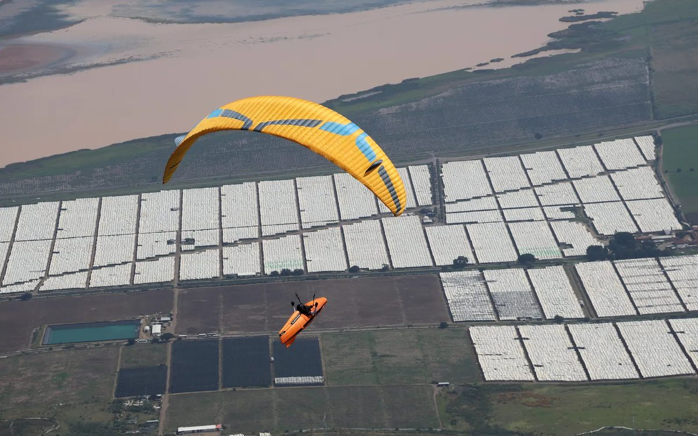
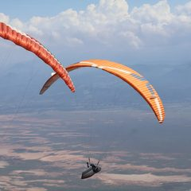
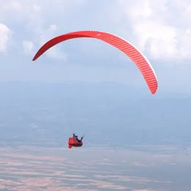
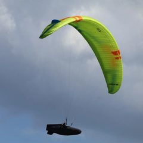
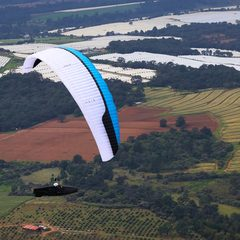
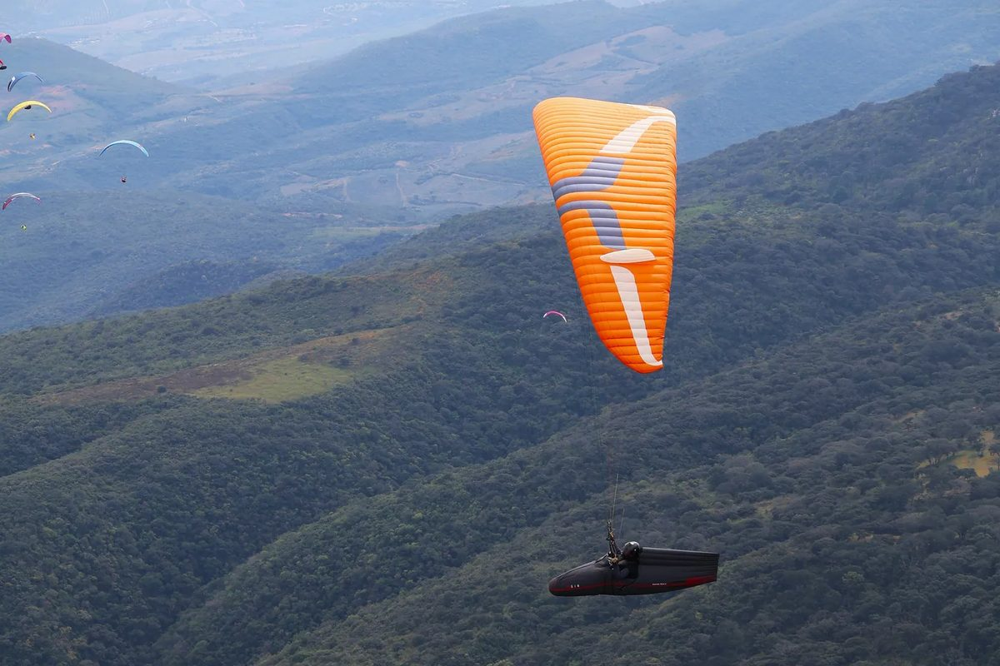
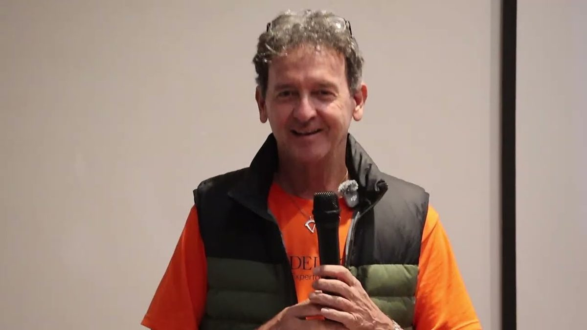

| |
 |
Field notes
12 Nov 2026 |
|
 |
|
On now · SRS Advance Edition, Tapalpa, Mexico
Four Tasks Into Tapalpa
| 8 to 14Nov 2026 |
4 of 7tasks flown |
116pilots |
484photos |
|
|
Hello from Tapalpa,
I am in Mexico on the media team of the SRS Advance Edition. Every evening the day's photos go online, free to save, and a highlights film of the task follows.
Four tasks are flown, three to go. Here is each day, and the rest of my 2026 season, one tap each.
Aninder
|
|
|
Where I have been
The 2026 Season
All four on one page: Media →
|
|
SRS Tapalpa
Task By Task
Results provisional, from SRS scores on 12 Nov.
 |
Task 1 · Sun 8 Nov · 59.1 km
An opener that started low and ended with a long glide into the wind. Won by Matthijs Groeneveld, 26 in goal.
Watch 4:48 | 99 photos
|
|
 |
Task 2 · Mon 9 Nov · 41.3 km
Raced under a storm clock, stopped by rain at 14:40. Arnold Castro won, the only pilot in goal.
Watch 4:36 | 54 photos
|
|
 |
Task 3 · Tue 10 Nov · 58.7 km
The ridge, the lake bed into the wind and a cloud street home. Won by Abel Varga, 88 in goal.
Watch 6:41 | 144 photos
|
|
 |
Task 4 · Wed 11 Nov · 82.4 km
The longest task yet, and nobody made goal. Brian Duffy flew furthest, 65.6 km, and won the day.
Film [to supply] | 168 photos
|
|
|
Tasks 5 to 7 · to 14 Nov · to come
|
|
|
Overall after four tasks · provisional
| 1 |
Andrés Tello Alvarado MEX |
3,137.6 |
| 2 |
Bill Belcourt USA |
2,953.5 |
| 3 |
Chaeden Luebberke USA |
2,897.0 |
Bill Belcourt was on the podcast last year: the safety paradox →
|
 |
Find Yourself In The Photos
484 photos from the practice day and Tasks 1 to 4, by task, free to save. The practice day's are by Paco Peciado.
|
|
Listen · 53 min
Miguel Gutiérrez on Flying Tapalpa

Miguel talks about flying in Tapalpa: the airspace, local flying, the thermals, and what you need to know to fly here.
Watch the talk →
|
|
Like what you see? Join me on Patreon
|
|
|
See you up there,
Aninder
A question for the show? aninder@paraglidingatlas.com
|
|
Touch The Sky With Glory
You get this because you joined the Atlas list at paraglidingatlas.com. Not for you any more? Unsubscribe in one tap.
Paragliding Atlas · postal address [to supply]
|
|